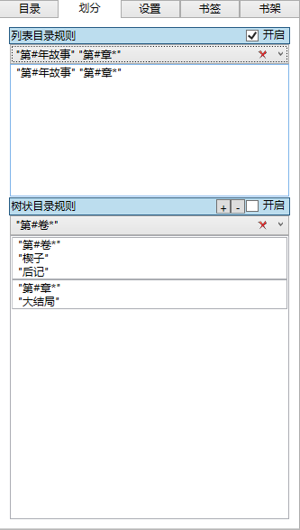

章节划分规则面板允许我们对TXTReader匹配表达式进行编辑，系统将会根据选中的表达式对章节标题进行匹配，从而划分章节。
该面板分上下两部分，均可通过点击各自上方的标题收起。
在每个部分上方的标题右边有一个复选框，选中时才会启用该规则，当同时启用的时候，列表目录规则优先于树状目录规则进行匹配。
列表目录即类似下面这种目录排布
第一卷 卷名 第一章 章名
第一卷 卷名 第二章 章名
第一卷 卷名 第三章 章名
…………
第二卷 卷名 第一章 章名
第二卷 卷名 第二章 章名
第二卷 卷名 第三章 章名
…………
第三卷 卷名 第一章 章名
第三卷 卷名 第二章 章名
第三卷 卷名 第三章 章名
…………
这种模式下，可以在文本框中每行输入一条TXTReader匹配表达式每行之间是或关系，写在前面的优先级高于写在后面的表达式，用于描述每个章节的标题。
树状目录即类似下面这种目录排布
第一卷 卷名
第一章 章名
第二章 章名
第三章 章名
…………
第二卷 卷名
第一章 章名
第二章 章名
第三章 章名
…………
第三卷 卷名
第一章 章名
第二章 章名
第三章 章名
…………
这种模式下，我们可以通过标题上的“+”“-”两个按钮增加，减少章节的级别数，例如例子那种即为两个级别的。
第一个文本框为第1级别，相当于例子中“卷”的级别。然后从上到下依次为2,3,4等级别。
可以在每个文本框中每行输入一条TXTReader匹配表达式每行之间是或关系，写在前面的优先级高于写在后面的表达式，用于描述每个章节的标题。